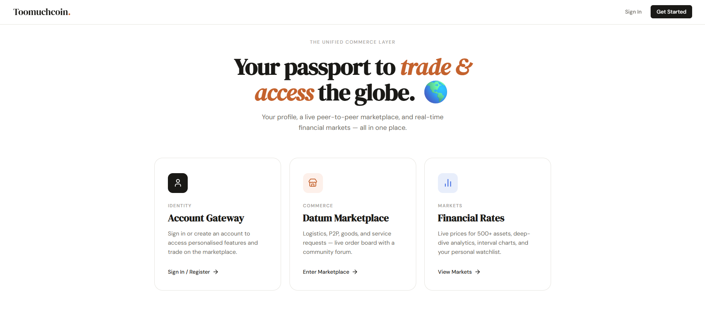
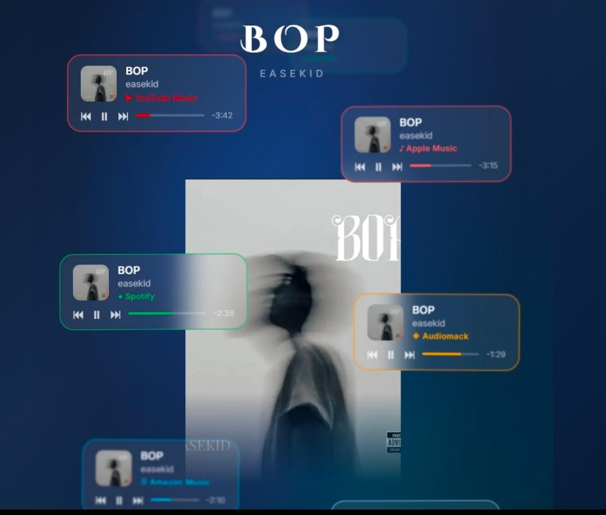
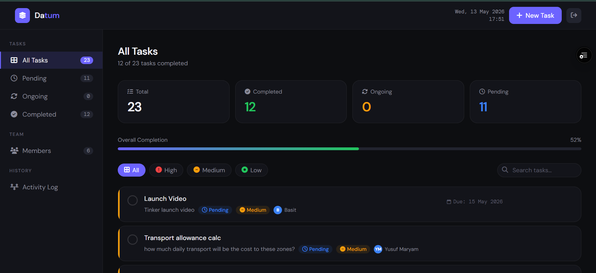

Projects & Portfolio
A selection of UI/UX design work and frontend builds, each solving a real problem.

Toomuchcoin — Datum Enterprise Platform
Agentic commerce platform combining P2P marketplace, live crypto/stock market data, vendor showcase, and subscription management. Built and maintained as lead developer for Datum Enterprise.

NESAAU Admin Dashboard
Administrative tool designed for Nigerian Economics Students' Association (NESAAU) members. As Treasurer (2025/2026 session), I led both the design and implementation of this platform.

EASEKID "BOP" — Artist PR Visual
Cinematic interactive HTML promotional page for artist EASEKID. Floating frosted-glass streaming platform cards around a central artist image on a deep-navy background. Mobile responsive.
ThesisWallet — Student Finance App
A personal finance and thesis-tracking app designed for Nigerian final-year students. Features gold progress rings, a branded splash screen, and a full Help & Support system. Built end-to-end in Figma and React.
Centrepoint Supermarket — E-Commerce Site
Full e-commerce experience for a local Ibadan supermarket. Cart drawer with WhatsApp order generation, delivery/pickup toggle, and time-slot booking.

TaskFlow — Datum Team Task Manager
A role-based task management platform built for Datum's internal team. Admin and member dashboards, PIN login, WhatsApp notifications, activity log, and real-time task progression — deployed on Vercel with Supabase backend.